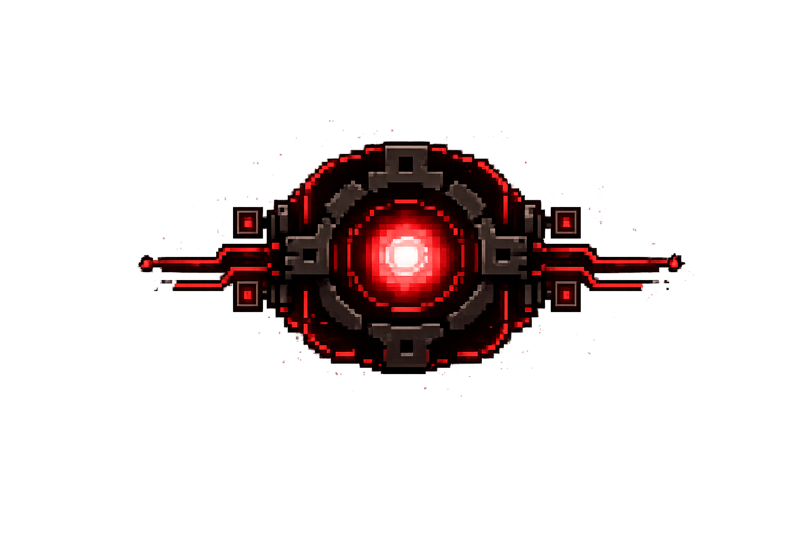

CoreProtocol je akční 2D top-down hra, ve které se hráč vydává spravit poškozené energetické jádro. Avšak problémy jádra zapříčiní rozmnožení silných nepřátel. Dokážeš nepřátele porazit a zachránit tak svět?
Videohra se zaměřuje na jednoduché herní mechaniky a čistý design pro ten nejlepší herní zážitek.
Pohyb (WASD) v uzavřeném prostoru
Střelba nebo útok na blízko s cooldownem mezi útoky (omezený počet útoků po sobě)
Více typů nepřátel s rúznými schopnostmi
Postup do další místnosti po zabití všech nepřátel
Boss na konci levelu
Hráč má více životů a po smrti lze restartovat level
Drone unit - základní typ nepřítele, který má normální pohyb a střely
Glitch unit - nepřítel s nepředvídatelným pohybem a vylepšenými střelami
Guardian of the Core - hlavní boss na konci levelu
Je rok 2167.
Lidstvo vytvořilo síť sektorů řízených umělou inteligencí, které pomáhají při záchraně planety.
Jednoho dne avšak jeden ze sektorů přestane odpovídat na zprávy.
Hráč je proto vyslán, aby zjistil co se stalo a situaci vyřešil.
Avšak ještě neví, co ho uvnitř čeká...
Plasma rifle - Silná energetická puška. Má vysoké poškození, ale pomalý fire rate.
Pulse pistol - Lehká a rychlá pistole. Má malé poškození, ale vysokou rychlost útoku.
Chaos blade - Silná čepel pro boj na blízko. Způsobuje plošné poškození na malou vzdálenost.
Rocket launcher - Těžký raketomet, který lze získat po zabití bosse. Způsobuje velké plošné poškození.
Na této hře pracuje tým čtyř studentů střední školy.
Cílem projektu je se naučit pracovat ve skupině.
Plánovaný rok dokončení hry je rok 2027.